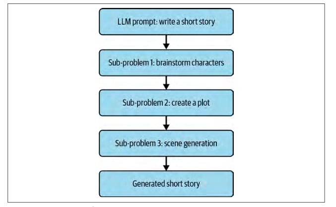

基于Langchain的提示词开发实践#
LangChain简介#
LangChain 是一个开源框架，旨在简化和加速基于大型语言模型 (LLM) 的应用程序开发。它提供了一整套工具和模块，使开发者可以轻松地将语言模型与外部数据源、API、甚至自主决策机制相结合，从而实现数据增强和智能化功能。LangChain 同时支持 Python 和 TypeScript 版本，让不同技术栈的开发者都能利用这一框架快速构建高效、灵活的 AI 应用。其核心理念在于不仅仅将语言模型作为简单的 API 接口使用，而是通过丰富的功能扩展，打造出更加智能和具有自主决策能力的应用程序。
安装与准备#
如果是在本地运行，建议用虚拟环境。
!pip install langchain langchain-openai
from langchain_openai.chat_models import ChatOpenAI
from google.colab import userdata
from langchain_openai.chat_models import ChatOpenAI
from langchain.schema import AIMessage, HumanMessage, SystemMessage
# Instantiate ChatOpenAI with the desired settings
chat = ChatOpenAI(
temperature=0.6,
model="gpt-4o", # Correctly specify the model name (ensure the model name is valid)
api_key=userdata.get('OPENAI_API_KEY')
)
# Define the conversation messages
messages = [
SystemMessage(content="Act as a senior software engineer at a startup company."),
HumanMessage(content="Please can you provide a funny joke about software engineers?")
]
# Invoke the chat model using the provided messages
response = chat.invoke(input=messages)
# Print the response content
print(response.content)
如果不指定 model，ChatOpenAI 默认会使用 “gpt-3.5-turbo” 模型。
输出：
Sure, here's one for you:
Why do software engineers prefer dark mode?
Because light attracts bugs!
LangChain 提示词模板#
提示词通常都是使用f-string写：
language = "Python"
prompt = f"What is the best way to learn coding in {language}?"
print(prompt)
# What is the best way to learn coding in Python?
为什么使用LangChain#
为什么不直接使用 f-string 来进行提示模板化呢，因为用 LangChain 的提示模板能轻松做到以下几点：
验证你的提示输入
通过组合，将多个提示词整合
自定义选择器，将 k-shot 示例注入到提示中
从 .yml 和 .json 文件中保存和加载提示词
创建在生成时可以执行额外代码或指令的自定义提示模板
LangChain 表达式语言（LCEL）#
LangChain 表达式语言（LangChain Expression Language, LCEL） 中 “|” 管道运算符是 LCEL 的关键组件，它可将数据处理流水线中不同的组件（或可运行单元）串联在一起。
在 LCEL 中，“|” 运算符类似于 Unix 管道运算符：它将一个组件的输出作为输入传递给链中下一个组件，从而让你可以轻松地连接和组合不同的组件，创建出复杂的操作链。
例如：
chain = prompt | model
这里，“|” 运算符用于将 prompt 和 model 组件串联在一起。prompt 组件的输出会传递给 model 组件。这种链式机制使你可以从基本组件构建复杂的链，并实现数据在处理流水线各阶段之间的无缝流动。
另外，顺序非常重要，理论上你也可以构造如下链：
bad_order_chain = model | prompt
但在调用 invoke 函数时会产生错误，因为 model 返回的值与 prompt 所期望的输入不兼容。
接下来，让我们使用提示模板创建一个商业名称生成器，该生成器将返回五到七个相关的商业名称。
from langchain_openai.chat_models import ChatOpenAI
from langchain_core.prompts import (
SystemMessagePromptTemplate,
ChatPromptTemplate
)
template = """
You are a creative consultant brainstorming names for businesses.
You must follow the following principles:
{principles}
Please generate a numerical list of five catchy names for a start-up in the
{industry} industry that deals with {context}?
Here is an example of the format:
1. Name1
2. Name2
3. Name3
4. Name4
5. Name5
"""
model = ChatOpenAI(
temperature=0.6,
model="gpt-4o", # Correctly specify the model name (ensure the model name is valid)
api_key=userdata.get('OPENAI_API_KEY')
)
system_prompt = SystemMessagePromptTemplate.from_template(template)
chat_prompt = ChatPromptTemplate.from_messages([system_prompt])
chain = chat_prompt | model
result = chain.invoke({
"industry": "medical",
"context": '''creating AI solutions by automatically summarizing patient records''',
"principles": '''1. Each name should be short and easy to remember.
2. Each name should be easy to pronounce.
3. Each name should be unique and not already taken by another company.'''
})
print(result.content)
1. MedBrief
2. HealthSynth
3. RecordWise
4. SummarAIze
5. ChartGenius
在聊天模型中使用 PromptTemplate#
LangChain 提供了一种更传统的模板，称为 PromptTemplate，它需要传入 input_variables 和 template 参数。
输入：
from langchain_core.prompts import PromptTemplate
from langchain.prompts.chat import SystemMessagePromptTemplate
from langchain_openai.chat_models import ChatOpenAI
prompt = PromptTemplate(
template='''You are a helpful assistant that translates {input_language} to {output_language}.''',
input_variables=["input_language", "output_language"],
)
system_message_prompt = SystemMessagePromptTemplate(prompt=prompt)
chat = ChatOpenAI()
chat.invoke(system_message_prompt.format_messages(
input_language="English", output_language="French"))
输出：
AIMessage(content="Vous êtes un assistant utile qui traduit l'anglais en français.", additional_kwargs={}, example=False)
输出解析器#
输出解析器是 LangChain 提供的一种高级抽象，用于从大型语言模型（LLM）的字符串响应中解析结构化数据。通常我们需要使用正则表达式（regex）从文本中提取结构化数据，但在 LangChain 中可以通过输出解析器自动完成这一操作。
目前可用的输出解析器包括：
列表解析器 (List parser)。返回一个由逗号分隔的项目列表。
日期时间解析器 (Datetime parser)。将 LLM 的输出解析为日期时间格式。
枚举解析器 (Enum parser)。将字符串解析为枚举值。
自动修正解析器 (Auto-fixing parser)。封装另一个输出解析器，如果该输出解析器失败，则调用另一个 LLM 来修正错误。
Pydantic（JSON）解析器 (Pydantic (JSON) parser)。将 LLM 的响应解析为符合 Pydantic 模式的 JSON 输出。
Retry parser (Retry parser)。提供对前一个输出解析器解析失败的重试。
Structured output parser (Structured output parser)。可用于返回多个字段的解析结果。
XML parser (XML parser)。将 LLM 的响应解析为基于 XML 的格式。
.get_format_instructions()。该函数为你的提示提供输出可解析的结构化格式所需的说明。
.parse(llm_output: str)。该函数负责将 LLM 的响应解析为预定义的格式。
输入：
from langchain_core.prompts.chat import (
ChatPromptTemplate,
SystemMessagePromptTemplate,
)
from langchain_openai.chat_models import ChatOpenAI
from langchain.output_parsers import PydanticOutputParser
from pydantic.v1 import BaseModel, Field
from typing import List
temperature = 0.0
class BusinessName(BaseModel):
name: str = Field(description="The name of the business")
rating_score: float = Field(description='''The rating score of the
business. 0 is the worst, 10 is the best.''')
class BusinessNames(BaseModel):
names: List[BusinessName] = Field(description='''A list
of business names''')
# 设置解析器并将指令注入到提示模板中：
parser = PydanticOutputParser(pydantic_object=BusinessNames)
principles = """
- The name must be easy to remember.
- Use the {industry} industry and Company context to create an effective name.
- The name must be easy to pronounce.
- You must only return the name without any other text or characters.
- Avoid returning full stops, \n, or any other characters.
- The maximum length of the name must be 10 characters.
"""
# 聊天模型输出解析器：
model = ChatOpenAI()
template = """Generate five business names for a new start-up company in the
{industry} industry.
You must follow the following principles: {principles}
{format_instructions}
"""
system_message_prompt = SystemMessagePromptTemplate.from_template(template)
chat_prompt = ChatPromptTemplate.from_messages([system_message_prompt])
# 创建 LCEL 链：
prompt_and_model = chat_prompt | model
result = prompt_and_model.invoke(
{
"principles": principles,
"industry": "Data Science",
"format_instructions": parser.get_format_instructions(),
}
)
# 输出解析器，将 LLM 响应解析为 Pydantic 对象：
print(parser.parse(result.content))
输出：
names=[BusinessName(name='DataWiz', rating_score=8.5),
BusinessName(name='InsightIQ',
rating_score=9.2), BusinessName(name='AnalytiQ', rating_score=7.8),
BusinessName(name='SciData', rating_score=8.1),
BusinessName(name='InfoMax', rating_score=9.5)]
加载必要库之后，你将设置一个 ChatOpenAI 模型。接着，从你的模板中创建 SystemMessagePromptTemplate，并以此构建一个 ChatPromptTemplate。你将使用 Pydantic 模型 BusinessName 和 BusinessNames 来构建所期望的输出结构——一个包含唯一商业名称的列表。随后，你会创建一个用于解析这些模型的 Pydantic 解析器，并通过调用 invoke 函数，利用用户输入的变量来格式化提示。将这个定制的提示传递给模型后，你就能利用解析器使模型生成具有创造性且独特的商业名称。
可以通过以下语法在 LCEL 中使用输出解析器：
chain = prompt | model | output_parser
让我们将输出解析器直接添加到链中。
输入：
parser = PydanticOutputParser(pydantic_object=BusinessNames)
chain = chat_prompt | model | parser
result = chain.invoke(
{
"principles": principles,
"industry": "Data Science",
"format_instructions": parser.get_format_instructions(),
}
)
print(result)
输出：
names=[BusinessName(name='DataTech', rating_score=9.5), ...]
值得注意的是，要求 LLM 提供结构化的 JSON 输出后，你可以从 LLM 的响应中构建一个灵活且通用的 API。虽然这种方式存在一些局限性，例如生成的 JSON 大小以及提示词的可靠性，但它仍然是 LLM 应用的一个非常有前景的领域。
输出解析器让你不必再处理正则表达式的复杂性和繁琐性，提供了多种易于使用的功能以满足各种需求。既然你已经看到了它们的实际应用，就可以利用输出解析器轻松地构建并提取所需数据，从 LLM 的输出中充分发挥 AI 的潜力来完成任务。
此外，通过使用解析器对从 LLM 中提取的数据进行结构化，你可以轻松地选择如何组织输出以实现更高效的使用。如果你处理大量列表，并且需要按照某些标准（例如商业名称）对它们进行排序，这将非常有用。
openai 原生支持json输出#
输入（ChatGPT o3-mini）：
请对以下文本进行实体识别，并以 JSON 格式返回结果：
"Barack Obama was born in Hawaii. He was the 44th president of the United States."
输出：
{
"entities": [
{
"text": "Barack Obama",
"label": "PERSON"
},
{
"text": "Hawaii",
"label": "LOCATION"
},
{
"text": "United States",
"label": "LOCATION"
}
]
}
LangChain Evals#
除了使用输出解析器检查格式错误之外，大多数 AI 系统还会使用 evals 或评价指标来衡量每个提示响应的性能。LangChain 提供了许多开箱即用的评估器，这些评估器可以直接在其 LangSmith 平台中记录，以便进行进一步的调试、监控和测试。Weights and Biases 是另一种提供类似功能和追踪能力的机器学习平台，适用于 LLMs。
评价指标不仅对提示测试有用，还可用于识别检索的正面和负面示例，以及构建用于微调自定义模型的数据集。
大多数评价指标依赖于一组测试用例，这些测试用例是一组已知正确答案的输入输出配对。通常，这些参考答案是由人手动创建或策划的，但使用更智能的模型（如 GPT-4）生成真实答案也是一种常见做法，以下示例中便采用了这种方法。给定一组关于金融交易的描述，我们使用 GPT-4 对每笔交易进行分类，指定 transaction_category 和 transaction_type。
由于将 GPT-4 的答案视为正确答案，现在可以评估较小模型（例如 GPT-3.5-turbo 和 Mixtral 8x7b，在 API 中称为 mistral-small）的准确性。如果较小模型的准确性足够高，你就可以节省成本或降低延迟。此外，如果该模型是开源的（例如 Mistral 的模型），你可以将任务迁移到自己的服务器上运行，从而避免将可能敏感的数据发送到组织外部。
我们建议先使用外部 API 进行测试，然后再考虑自建开源模型。
记得注册并订阅以获取 API 密钥；然后在终端中将其作为环境变量暴露：
export MISTRAL_API_KEY=api-key
下面的脚本是一个笔记本的一部分，该笔记本之前已经定义了一个 DataFrame df。为了简洁起见，我们只研究脚本的评估部分，假设 DataFrame 已经定义。
输入：
import os
from langchain_mistralai.chat_models import ChatMistralAI
from langchain.output_parsers import PydanticOutputParser
from langchain_core.prompts import ChatPromptTemplate
from pydantic.v1 import BaseModel
from typing import Literal, Union
from langchain_core.output_parsers import StrOutputParser
# 1. 定义模型:
mistral_api_key = os.environ["MISTRAL_API_KEY"]
model = ChatMistralAI(model="mistral-small", mistral_api_key=mistral_api_key)
# 2. 定义提示:
system_prompt = """You are are an expert at analyzing
bank transactions, you will be categorizing a single
transaction.
Always return a transaction type and category:
do not return None.
Format Instructions:
{format_instructions}"""
user_prompt = """Transaction Text:
{transaction}"""
prompt = ChatPromptTemplate.from_messages([
("system", system_prompt),
("user", user_prompt)
])
# 3. 定义 Pydantic 模型:
class EnrichedTransactionInformation(BaseModel):
transaction_type: Union[
Literal["Purchase", "Withdrawal", "Deposit", "Bill Payment", "Refund"], None
]
transaction_category: Union[
Literal["Food", "Entertainment", "Transport", "Utilities", "Rent", "Other"], None
]
# 4. 定义输出解析器:
output_parser = PydanticOutputParser(pydantic_object=EnrichedTransactionInformation)
# 以下两行代码用于将生成的交易类型和交易分类添加到 DataFrame 中
df["mistral_transaction_type"] = transaction_types
df["mistral_transaction_category"] = transaction_categories
df.head()
# 5. 定义一个函数，用于修正并移除反斜杠:
def remove_back_slashes(string):
# 双反斜杠用于转义
cleaned_string = string.replace("\\", "")
return cleaned_string
# 6. 创建一个 LCEL 链，该链用于修正格式：
chain = prompt | model | StrOutputParser() | remove_back_slashes | output_parser
transaction = df.iloc[0]["Transaction Description"]
result = chain.invoke({
"transaction": transaction,
"format_instructions": output_parser.get_format_instructions(),
})
# 7. 对整个数据集调用该链:
results = []
from tqdm import tqdm
for i, row in tqdm(df.iterrows(), total=len(df)):
transaction = row["Transaction Description"]
try:
result = chain.invoke({
"transaction": transaction,
"format_instructions": output_parser.get_format_instructions(),
})
except:
result = EnrichedTransactionInformation(
transaction_type=None,
transaction_category=None
)
results.append(result)
# 8. 将结果添加到 DataFrame 中，作为交易类型和交易分类的列:
transaction_types = []
transaction_categories = []
for result in results:
transaction_types.append(result.transaction_type)
transaction_categories.append(result.transaction_category)
输出：
Transaction Description |
transaction_type |
transaction_category |
mistral_transaction_type |
mistral_transaction_category |
|---|---|---|---|---|
cash deposit at local branch |
Deposit |
Other |
Deposit |
Other |
cash deposit at local branch |
Deposit |
Other |
Deposit |
Other |
withdrew money for rent payment |
Withdrawal |
Rent |
Withdrawal |
Rent |
withdrew cash for weekend expenses |
Withdrawal |
Other |
Withdrawal |
Other |
purchased books from the bookstore |
Purchase |
Other |
Purchase |
Entertainment |
代码解释：
导入模块：
从
langchain_mistralai.chat_models导入ChatMistralAI，实现了 LangChain 的 Mistral 模型。
导入输出解析器：
从
langchain.output_parsers导入PydanticOutputParser类，用于基于 Pydantic 模型解析输出。同时导入字符串输出解析器，用于处理 Mistral 响应中 JSON 键的反斜杠问题。
获取 API 密钥：
使用
os.environ["MISTRAL_API_KEY"]从环境变量中获取 Mistral API 密钥。在运行笔记本之前必须设置该密钥。
初始化模型：
使用
ChatMistralAI(model="mistral-small", mistral_api_key=mistral_api_key)初始化模型实例。这里的 “mistral-small” 是 Mistral 小模型，也称为 Mixtral 8x7b 模型（在 API 中称为 mistral-small）。
定义提示模板：
定义
system_prompt和user_prompt模板，用于聊天过程中对交易进行分类。
定义 Pydantic 模型：
定义
EnrichedTransactionInformationPydantic 模型，包含两个字段：transaction_type和transaction_category。这些字段具有特定的允许值，并且可以为 None，用于确保输出格式正确。
定义清理函数：
定义
remove_back_slashes(string)函数，用于去除字符串中的反斜杠。
构建 LCEL 链：
使用
chain = prompt | model | StrOutputParser() | remove_back_slashes | output_parser构建链。这个链在调用原始输出解析器之前，先经过字符串输出解析器和清理函数处理。
提取第一条交易描述：
使用
transaction = df.iloc[0]["Transaction Description"]从 DataFramedf中提取第一条交易描述（假设 DataFrame 已提前加载）。
遍历 DataFrame：
使用
for i, row in tqdm(df.iterrows(), total=len(df))遍历 DataFrame 中的每一行，并显示进度条。
调用链处理：
在循环中，通过
result = chain.invoke(...)对每条交易调用链进行处理。
异常处理：
如果调用过程中发生异常，则创建一个默认的
EnrichedTransactionInformation对象（字段均为 None），这些将被视为错误，但不会中断处理循环。
更新 DataFrame：
将生成的
transaction_types和transaction_categories分别作为新列添加到 DataFrame 中，命名为mistral_transaction_type和mistral_transaction_category。最后，使用
df.head()显示更新后的 DataFrame。
将 Mistral 的响应保存到 DataFrame 中后，就可以将它们与之前定义的交易类别和类型进行比较，以检查 Mistral 的准确性。最基本的 LangChain 评估指标是将预测结果与参考答案进行精确字符串匹配，如果匹配正确则返回 1，错误则返回 0。笔记本中给出了如何实现这一指标的示例，显示 Mistral 的准确率为 77.5%。不过，如果你只是在比较字符串，那么可能不需要在 LangChain 中实现这一过程。
LangChain 的价值在于其标准化和经过测试的方法，利用 LLM 实现更高级的评估器。标签为 labeled_pairwise_string 的评估器使用 GPT-4 比较两个输出，并给出选择理由。这类评估器的常见用例是比较来自两个不同提示或模型的输出，尤其是在被测试模型不如 GPT-4 先进时。使用 GPT-4 的这个评估器依然适用于评估 GPT-4 的响应，但你应手动审核其推理和评分以确保其表现良好：如果 GPT-4 在某个任务上表现不佳，那么它在评估该任务时也可能表现不佳。
在笔记本中，同一交易分类任务又以 model = ChatOpenAI(model="gpt-3.5-turbo-1106", model_kwargs={"response_format": {"type": "json_object"}}) 的模型重新运行。现在可以对 Mistral 和 GPT-3.5 的响应进行成对比较，如以下示例所示。从输出中你可以看到给出分数的推理理由。
输入：
# 使用 LangChain 评估器对答案进行评估：
from langchain.evaluation import load_evaluator
evaluator = load_evaluator("labeled_pairwise_string")
# 从 DataFrame 中获取第一行数据
row = df.iloc[0]
transaction = row["Transaction Description"]
gpt3pt5_category = row["gpt3.5_transaction_category"]
gpt3pt5_type = row["gpt3.5_transaction_type"]
mistral_category = row["mistral_transaction_category"]
mistral_type = row["mistral_transaction_type"]
reference_category = row["transaction_category"]
reference_type = row["transaction_type"]
# 将数据转换为 JSON 格式供评估器使用：
gpt3pt5_data = f"""{{
"transaction_category": "{gpt3pt5_category}",
"transaction_type": "{gpt3pt5_type}"
}}"""
mistral_data = f"""{{
"transaction_category": "{mistral_category}",
"transaction_type": "{mistral_type}"
}}"""
reference_data = f"""{{
"transaction_category": "{reference_category}",
"transaction_type": "{reference_type}"
}}"""
# 为评估器设置上下文提示输入：
input_prompt = """You are an expert at analyzing bank
transactions,
you will be categorizing a single transaction.
Always return a transaction type and category: do not
return None.
Format Instructions:
{format_instructions}
Transaction Text:
{transaction}
"""
# 将评估结果附加到对应的列表中：
transaction_types.append(transaction_type_score)
transaction_categories.append(transaction_category_score)
# 计算准确率得分：
accuracy_score = 0
for transaction_type_score, transaction_category_score in zip(transaction_types, transaction_categories):
accuracy_score += transaction_type_score['score'] + transaction_category_score['score']
accuracy_score = accuracy_score / (len(transaction_types) * 2)
print(f"Accuracy score: {accuracy_score}")
# 使用评估器进行字符串对比评估：
evaluator.evaluate_string_pairs(
prediction=gpt3pt5_data,
prediction_b=mistral_data,
input=input_prompt.format(
format_instructions=output_parser.get_format_instructions(),
transaction=transaction
),
reference=reference_data,
)
输出：
{
"reasoning": "Both Assistant A and Assistant B provided the exact same response to the user's question. Their responses are both helpful, relevant, correct, and demonstrate depth of thought. They both correctly identified the transaction type as \"Deposit\" and the transaction category as \"Other\" based on the transaction text provided by the user. Both responses are also well-formatted according to the JSON schema provided by the user. Therefore, it's a tie between the two assistants.\n\nFinal Verdict: [[C]]",
"value": null,
"score": 0.5
}
evaluator = load_evaluator(“labeled_pairwise_string”)
这是一个辅助函数，可用于通过名称加载任何 LangChain 评估器。在本例中，它加载的是 labeled_pairwise_string 评估器。row = df.iloc[0]
这一行以及随后的七行代码获取了 DataFrame 中的第一行数据，并提取所需的各列值，包括交易描述、Mistral 和 GPT-3.5 的交易类别和类型。这里展示的是单个交易，但这段代码可以很容易地通过遍历每个交易（例如使用for i, row in tqdm(df.iterrows(), total=len(df)):）来运行，正如后续笔记本中所示。gpt3pt5_data = f”””{{
为了使用成对比较评估器，我们需要将结果以正确的格式传递给提示。这一步对 Mistral、GPT-3.5 以及参考数据均进行了格式化处理。input_prompt = “””You are an expert…
另一个需要正确设置格式的是提示。为了获得准确的评估分数，评估器需要看到为任务提供的指令。evaluator.evaluate_string_pairs(…
剩下的就是运行评估器：通过传入 prediction 和 prediction_b（分别代表 GPT-3.5 和 Mistral 的结果），以及输入提示和作为真值的参考数据来进行评估。后续循环处理
在笔记本中，这段代码之后还有一个示例，展示了如何遍历 DataFrame 中的每一行，对每条数据运行评估器，并将评估结果和推理保存回 DataFrame。
这个示例展示了如何使用 LangChain 评估器，但实际上有许多不同类型的评估器可供选择。 例如，字符串距离（Levenshtein）或嵌入距离评估器通常用于答案与参考答案不完全匹配的场景，此时只需要语义上足够接近。
Levenshtein 距离：允许基于将预测文本转换为参考文本所需的单字符编辑数进行模糊匹配。
嵌入距离：利用向量（在第5章中有介绍）来计算答案与参考答案之间的相似度。
另一种常用的评估器是成对比较评估器，它利用更智能的模型（如 GPT-4）来比较两个不同的提示或模型。 这种比较非常有用，因为它为每次比较提供了推理过程，有助于调试为何某种方法比另一种方法更优。 代码中展示了一个使用成对比较评估器来检查 GPT-3.5-turbo 与 Mixtral 8x7b 准确率的示例。
评估质量
如果没有定义适当的评价指标来衡量成功，就很难判断对提示或整个系统的改动究竟是在提升还是在损害响应质量。如果能够利用诸如 GPT-4 这样的智能模型自动化评价指标，就可以更快地迭代改进结果，而无需耗费大量成本或时间进行人工审查。
OpenAI 函数调用#
函数调用为输出解析器提供了一种替代方法，利用经过微调的 OpenAI 模型。这些模型能够识别何时应执行某个函数，并生成一个包含预定义函数名称及其参数的 JSON 响应。其几个主要用例包括：
设计复杂的聊天机器人
能够组织和管理日程。例如，你可以定义一个用于安排会议的函数：
schedule_meeting(date: str, time: str, attendees: List[str])将自然语言转换为可执行的 API 调用
像“打开走廊灯”这样的指令可以转换为control_device(device: str, action: 'on' | 'off')，以便与家庭自动化 API 进行交互。提取结构化数据
这可以通过定义函数来实现，例如extract_contextual_data(context: str, data_points: List[str])或search_database(query: str)。
每个在函数调用中使用的函数都需要一个适当的 JSON schema。让我们通过一个 OpenAI 包的示例来进行探索：
from openai import OpenAI
import json
from os import getenv
def schedule_meeting(date, time, attendees):
# 连接到日历服务：
return {
"event_id": "1234",
"status": "Meeting scheduled successfully!",
"date": date,
"time": time,
"attendees": attendees
}
OPENAI_FUNCTIONS = {
"schedule_meeting": schedule_meeting
}
在导入 OpenAI 和 json 后，你将创建一个名为 schedule_meeting 的函数。该函数是一个模拟示例，模拟了安排会议的过程，并返回诸如 event_id、date、time 和 attendees 等细节。接着，创建一个 OPENAI_FUNCTIONS 字典，将函数名称映射到实际函数，便于引用。
接下来，定义一个 functions 列表，该列表提供函数的 JSON 模式。该模式包括函数的名称、简要描述以及所需的参数，从而指导 LLM 如何与之交互：
# 我们预定义的函数 JSON 模式:
functions = [
{
"type": "function",
"function": {
"type": "object",
"name": "schedule_meeting",
"description": "在指定日期和时间为指定参会者安排会议",
"parameters": {
"type": "object",
"properties": {
"date": {"type": "string", "format": "date"},
"time": {"type": "string", "format": "time"},
"attendees": {"type": "array", "items": {"type": "string"}}
},
"required": ["date", "time", "attendees"]
}
}
}
]
指定格式
使用 OpenAI 模型进行函数调用时，请务必定义详细的 JSON 模式（包括名称和描述）。 这相当于为函数提供了蓝图，引导模型理解何时以及如何正确调用该函数。
在定义好函数之后，让我们发起一个 OpenAI API 请求。首先设置一个包含用户查询的消息列表。然后，使用 OpenAI 客户端对象将这条消息和函数模式发送给模型。LLM 分析对话后，会判断是否需要触发函数，并提供函数名称和参数。从 LLM 的响应中解析出 function 和 function_args。接着，执行该函数，并将其结果重新添加到对话中。最后，再次调用模型，以便生成整个过程的用户友好总结。
from openai import OpenAI
import json
from os import getenv
#初始化 OpenAI 客户端
client = OpenAI(api_key=getenv("OPENAI_API_KEY"))
#开始对话：
messages = [
{
"role": "user",
"content": '''Schedule a meeting on 2023-11-01 at 14:00
with Alice and Bob.''',
}
]
#将对话和函数模式发送给模型：
response = client.chat.completions.create(
model="gpt-3.5-turbo-1106",
messages=messages,
tools=functions,
)
response = response.choices[0].message
#检查模型是否想调用我们的函数：
if response.tool_calls:
# 获取第一个函数调用：
first_tool_call = response.tool_calls[0]
# 获取要调用的函数名称和参数：
function_name = first_tool_call.function.name
function_args = json.loads(first_tool_call.function.arguments)
print("This is the function name: ", function_name)
print("These are the function arguments: ", function_args)
# 根据函数名称找到对应的函数：
function = OPENAI_FUNCTIONS.get(function_name)
if not function:
raise Exception(f"Function {function_name} not found.")
# 调用函数：
function_response = function(**function_args)
# 将函数的响应结果添加回对话中：
messages.append(
{
"role": "function",
"name": "schedule_meeting",
"content": json.dumps(function_response),
}
)
# 让模型生成一个用户友好的总结：
second_response = client.chat.completions.create(
model="gpt-3.5-turbo-0613",
messages=messages
)
print(second_response.choices[0].message.content)
输出：
These are the function arguments: {'date': '2023-11-01', 'time': '14:00','attendees': ['Alice', 'Bob']}
This is the function name: schedule_meeting
I have scheduled a meeting on 2023-11-01 at 14:00 with Alice and Bob.
The event ID is 1234.
多个函数：
LLM 可以调用多个函数。明确参数：
OpenAI 可能会虚构函数参数，因此在系统消息中需要更明确地说明，以防止这种情况发生。function_call 参数设置方式：
强制调用特定函数：
设置tool_choice为{"type": "function", "function": {"name": "my_function"}}
用户消息无需函数调用：
设置tool_choice为"none"。默认设置（自动选择）：
默认设置为tool_choice: "auto"，模型会自主决定是否调用函数以及调用哪个函数。
Prompt Chaining#
你会发现，在一个提示中完成单个任务往往是不可能的。
你可以利用提示链（prompt chaining）的方式，这种方式涉及将多个提示的输入/输出与专门定制的 LLM 提示相结合，从而逐步构建出一个完整的想法。
举个例子，假设一家电影公司希望部分自动化他们的电影制作过程。这个过程可以拆分为几个关键组成部分，例如：
角色创建
剧情生成
场景/世界构建

Sequential Chain#
让我们将任务分解成多个链，然后再将它们重新组合为一个单独的链：
character_generation_chain
负责根据给定的“genre”生成三个到五个角色。plot_generation_chain
根据“characters”和“genre”这两个关键字生成短篇故事的情节。scene_generation_chain
负责生成情节中未包含的其他场景，将整个故事分解成多个有效的场景。
下面我们从创建三个独立的 ChatPromptTemplate 变量开始，每个链对应一个模板：
from langchain_core.prompts.chat import ChatPromptTemplate
character_generation_prompt = ChatPromptTemplate.from_template(
"""I want you to brainstorm three to five characters for my short story. The
genre is {genre}. Each character must have a Name and a Biography.
You must provide a name and biography for each character, this is very
important!
---
Example response:
Name: CharWiz, Biography: A wizard who is a master of magic.
Name: CharWar, Biography: A warrior who is a master of the sword.
---
Characters: """
)
plot_generation_prompt = ChatPromptTemplate.from_template(
"""Given the following characters and the genre, create an effective
plot for a short story:
Characters:
{characters}
---
Genre: {genre}
---
Plot: """
)
scene_generation_plot_prompt = ChatPromptTemplate.from_template(
"""Act as an effective content creator.
Given multiple characters and a plot, you are responsible for
generating the various scenes for each act.
You must decompose the plot into multiple effective scenes:
---
Characters:
{characters}
---
Genre: {genre}
---
Plot: {plot}
---
Example response:
Scenes:
Scene 1: Some text here.
Scene 2: Some text here.
Scene 3: Some text here.
----
Scenes: """
)
注意，由于这些提示模板从角色生成到情节生成再到场景生成的过程中，逐步添加了前一步骤的额外占位符变量，那么问题来了：如何确保这些额外的字符串（例如角色信息和情节内容）能传递到下游的 ChatPromptTemplate 变量中？
这通常可以通过链式调用实现，也就是将一个链的输出作为下一个链的输入，从而确保所有必要的数据都能正确地传递和使用。
Document Chains#
假设在你提交生成的故事之前，当地出版社要求你提供一个基于所有角色剧本的摘要。由于上下文长度的限制，这个任务需要对大量文本进行处理，这正是 Document Chains 的一个理想用例。
在深入代码之前，我们先了解一下整体流程：
该脚本对一系列场景文本进行摘要处理。请确保已安装 Pandas（使用 pip install pandas）。
首先，导入所需的工具：
from langchain_text_splitters import CharacterTextSplitter
from langchain.chains.summarize import load_summarize_chain
import pandas as pd
CharacterTextSplitter 和 load_summarize_chain 来自 LangChain 包，用于文本处理。
Pandas（以
pd导入）用于数据操作。
接下来，处理你的数据：
df = pd.DataFrame(generated_scenes)
这行代码将 generated_scenes 转换为 Pandas DataFrame，使原始场景数据以表格格式呈现，便于后续处理。
然后，合并所有文本：
all_character_script_text = "\n".join(df.character_script.tolist())
这行代码将 DataFrame 中的 character_script 列转换为一个列表，并用换行符连接每个条目，生成包含所有角色剧本的单一文本字符串。
准备文本以进行摘要处理：
text_splitter = CharacterTextSplitter.from_tiktoken_encoder(
chunk_size=1500, chunk_overlap=200
)
docs = text_splitter.create_documents([all_character_script_text])
这里，利用 from_tiktoken_encoder 方法创建一个 CharacterTextSplitter 实例，并指定文本块大小及重叠部分。接着使用该分割器将合并后的文本分割成适合摘要处理的文档块。
设置摘要工具：
chain = load_summarize_chain(llm=model, chain_type="map_reduce")
这行代码使用 map-reduce 风格的摘要链，通过调用 load_summarize_chain 函数来加载摘要链，并将聊天模型传入其中。
运行摘要过程：
summary = chain.invoke(docs)
invoke 方法对先前分割的文本块执行摘要处理，并将结果存储在 summary 变量中。
最后，打印摘要结果：
print(summary['output_text'])
整体脚本如下：
from langchain.text_splitter import CharacterTextSplitter
from langchain.chains.summarize import load_summarize_chain
import pandas as pd
df = pd.DataFrame(generated_scenes)
all_character_script_text = "\n".join(df.character_script.tolist())
text_splitter = CharacterTextSplitter.from_tiktoken_encoder(
chunk_size=1500, chunk_overlap=200
)
docs = text_splitter.create_documents([all_character_script_text])
chain = load_summarize_chain(llm=model, chain_type="map_reduce")
summary = chain.invoke(docs)
print(summary['output_text'])
输出示例：
Aurora and Magnus agree to retrieve a hidden artifact, and they enter an ancient library to find a book that will guide them to the relic...
需要注意的是，尽管这里使用了 map_reduce 链，但 LangChain 中针对 Document 对象的处理实际上有四个核心链。invoke 方法会在之前准备好的文本块上执行摘要处理，并将结果存储到变量中。
参考#
提示词可视化 PromptShow